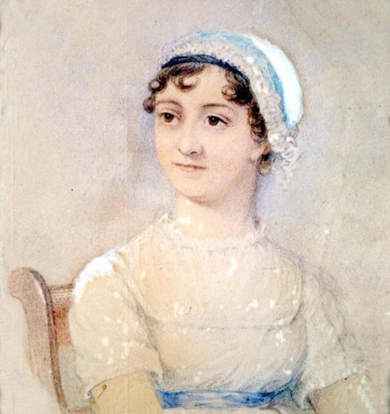
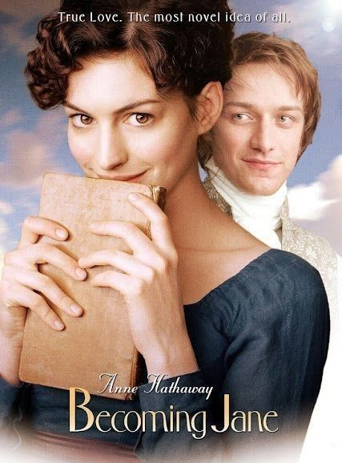
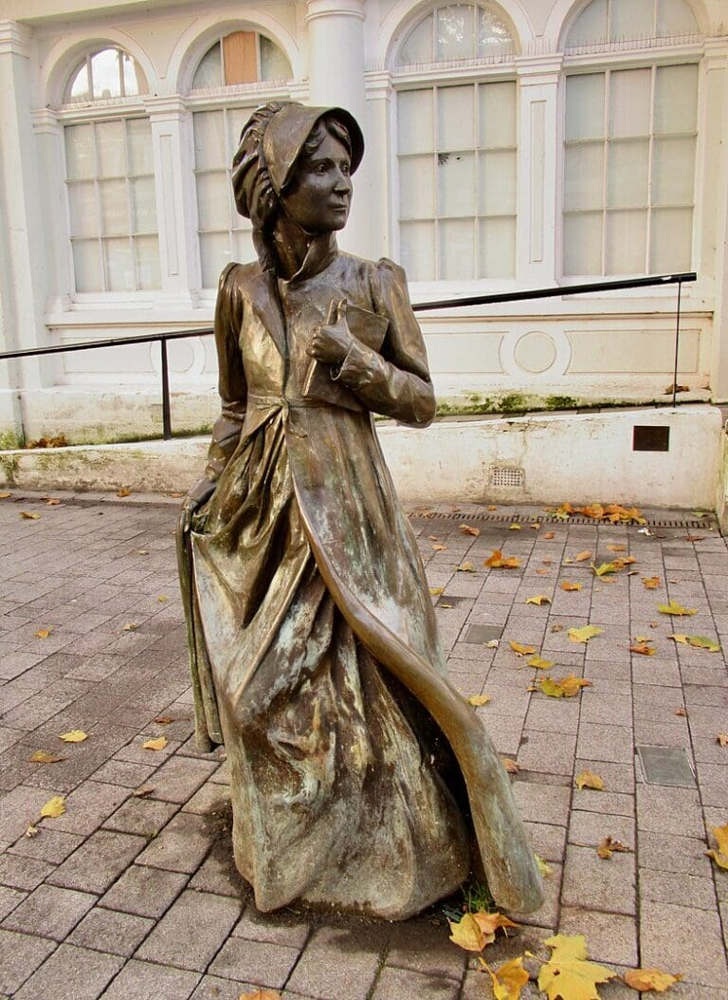
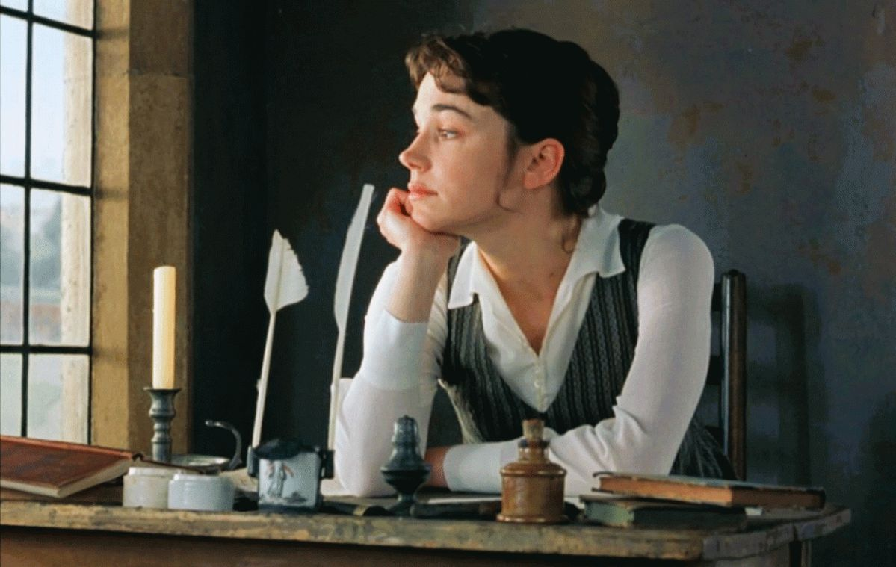
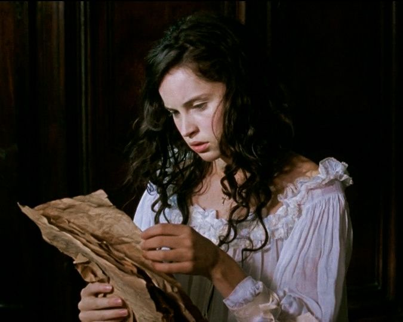
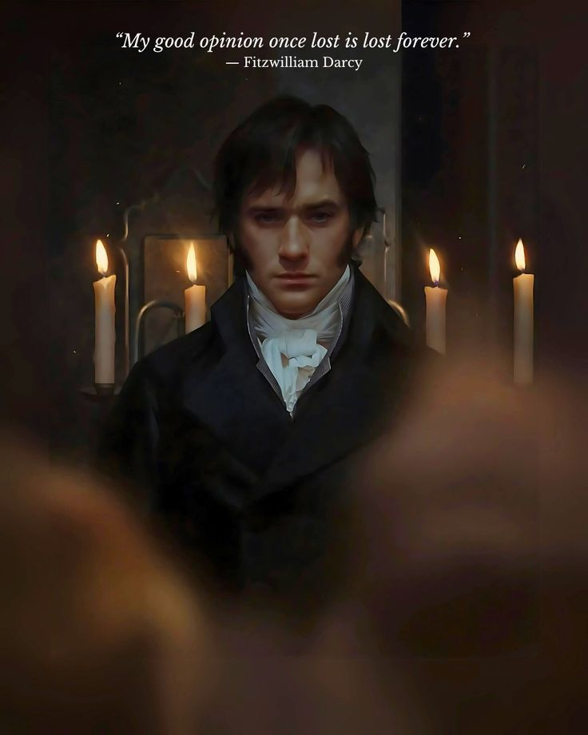
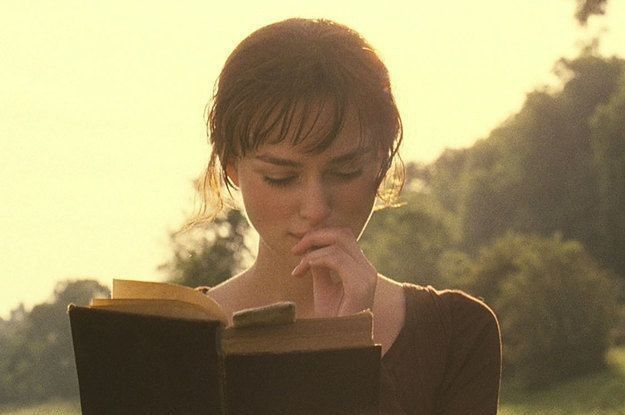

About Jane
Jane Austen was an English novelist 📜 who lived from 1775 to 1817. She is best known for her novels about love, marriage, family, and social life. Her stories often explore the lives of women and the expectations of society in the late eighteenth and early nineteenth centuries.
Austen's writing is known for its wit, gentle humour, and sharp observations of human behaviour. Today, her novels remain popular around the world and continue to inspire readers, films, and television adaptations. Compared with the works of many of her contemporaries, Jane Austen’s novels continued to enjoy large readerships in the late 20th and early 21st centuries. Indeed, her well-crafted and entertaining stories about smart young women—and her deft treatment of issues of power, class, and gender—have retained their relevance, speaking to “universal truths” about love and happiness

(to echo the famous first sentence of Pride and Prejudice). Her works also show an artist who was consciously working through—and critiquing—the literary and social conventions that had been established in the 18th century. Austen wrote her novels during the transition from the Enlightenment (and its focus on reason and skepticism) to Romanticism (and its idealization of emotion and the imagination). Austen’s heroines are women of deep feeling who undergo profound personal growth. Their differences in character—the proud Lizzy Bennet, the spontaneous Marianne Dashwood, the prudent Anne Elliot—and their similar predicaments as women living in an era of mercenary marriages serve as sharp critiques of a strictly transactional—and rational—approach to love.
Film and Television
Jane Austen's novels have inspired many films and television adaptations. Her stories continue to attract audiences because their themes of love, family, social expectations, and personal choice are still relevant today.
The first film adaptation was the 1940 MGM production of Pride and Prejudice starring Laurence Olivier and Greer Garson. BBC television dramatisations released in the 1970s and 1980s attempted to adhere meticulously to Austen's plots, c characterisations and settings
The British critic Robert Irvine noted that in American film adaptations of Austen's novels, starting with the 1940 version of Pride and Prejudice, class is subtly downplayed, and the society of Regency England depicted by Austen that is grounded in a hierarchy based upon the ownership of land and the antiquity of the family name is one that Americans cannot embrace in its entirety.
From 1995 many Austen adaptations appeared, with Ang Lee's film of Sense and Sensibility, for which screenwriter and star Emma Thompson won an Academy Award, and the BBC's immensely popular television miniseries Pride and Prejudice, starring Jennifer Ehle and Colin Firth.[187] A 2005 British production of Pride & Prejudice, directed by Joe Wright and starring Keira Knightley and Matthew Macfadyen,[188] was followed in 2007 by ITV's Mansfield Park and other.
Love and Friendship is based on Jane Austen's unpublished novella, Lady Susan, and unlike any of her other work.

The story follows Lady Susan Vernon (Kate Beckinsale), who has lost her standing at Langford and has been forced to move in with relatives at the less impressive Churchill. Her main goal is to get her daughter Frederica (Morfydd Clark) married off to the wealthy Sir James Martin (Tom Bennett), but everyone around her gets caught in the complex web that she controls with ease. Love and Friendship doesn't have Austen's typical independent heroine but an often wicked and conniving woman bent on improving her and her daughters' station, no matter the cost. Beckinsale is perfect, driving the character’s unrelenting self-interest. Susan is totally oblivious to others and knows no boundaries. However, unfortunately, the film fails to inspire as a whole. It doesn't have the decades-long attachment that Pride and Prejudice or Emma have.Honours / Books 📖
Honours: In 2013 Austen's works featured on a series of British postage stamps issued by the Royal Mail to mark the bicentenary of the publication of Pride and Prejudice Austen is on the £10 note issued by the Bank of England which was introduced in 2017, replacing Charles Darwin.

In July 2017 a statue of Austen was erected in Basingstoke, Hampshire, on the 200th anniversary of her death A statue of Austen by Martin Jennings was unveiled in October 2025 at The Close, near Winchester CathedralA statue of Jane Austen was unveiled at Winchester Cathedral in October 2025. It was sculpted by Martin Jennings. The statue depicts Austen "with her ringlets and cap" standing next to her writing table. It is situated outside 9 The Close Jennings "studied the available evidence to produce a likeness" of Austen as there are no definitive images of her. Winchester Cathedral described Jennings' "overall conception, reflected in her expression and posture, emphasises [Austen's] moral vision and the strength of her literary legacy". There were previous plans for Jennings to create a statue of Austen in Winchester, but these were abandoned in 2019. It was unveiled on 16 October 2025 during a special service at the cathedral by the Lord Lieutenant of Hampshire, Nigel Atkinson, the Interim Dean of Winchester Cathedral Roland Riem, and Martin Jennings. The service will also feature readings from Austen's novel Pride and Prejudice with actors Joanna David, Susannah Harker, and Adrian Lukis who appeared in the 1995 BBC TV adaptation.
Jane Austen wrote six major completed novels.Her most famous novel, Pride and Prejudice, tells the story of Elizabeth Bennet and her relationship with Mr. Darcy.
list of works
| Work | Year |
|---|---|
| Sense and Sensibility | 1811 |
| Pride and Prejudice | 1813 |
| Mansfield Park | 1814 |
| Emma | 1815 |
| Northanger Abbey | 1817 |
| Persuasion | 1817 |


Other works
- Sir Charles Grandison (adapted play) (1793, 1800)
- Plan of a Novel (1815)
- Poems (1796– 1817)
- Prayers (1796–1817)
- Letters (1796–1817)

